新版TeamTalk完整部署教程
新版TeamTalk部署教程
新版TeamTalk已经在2015年03月28日发布了，目前版本定为1.0.0版本，后续版本号会按照如下规则进行：
1、版本规则按照x.y.z的形式进行。
2、各端小bug修复则版本号中z增加。
3、有新的feature增加，则版本号中y增加。
4、有重大更新及不兼容更新，则版本号x增加。
本教程会在VirtualBox 虚拟机中进行安装部署一整套服务端，并做记录，给大家做个参考，后面会将整个虚拟机打包上传到网盘中，为那些不想自己亲自部署的人一个可用环境。
这篇博客中，不会使用一键部署脚本，我会一步一步手动去部署。另外我会尽量选择源码安装mysql，php，nginx等，后面所有的安装在/usr/local/目录下。(源码安装很多参考了军哥(http://www.lnmp.org)的脚本，在此表示感谢)。
真个部署过程从晚上8:00开始到半夜将近2:00(由于时间太晚了，明天还要上班，所以配置那块后面再写),耗时近6个小时，所以本文也耗时5个多小时才完成，希望可以帮助到大家。
更新:
2015年04月02日更新
更新了配置文件说明
2015年04月07日更新
更新了数据库导入，及问题修复。
2015年05月05日
修复mysql下载不了问题,感谢@Gene反馈。
我的环境如下:
虚拟机:VirtualBox 4.3.18
CPU:2核
内存:2GB
硬盘:10GB
操作系统:CentOS 6.5 x64
IP:192.168.1.150
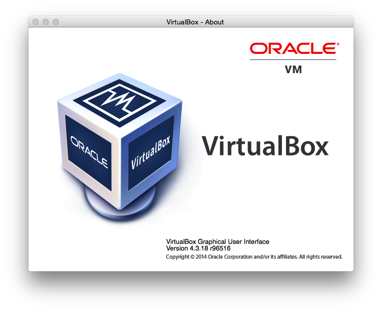
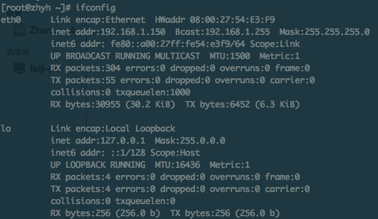
下面我们正式开始:
1、更新操作系统
更新操作系统:
CentOS 使用如下命令:
yum update
Ubuntu 使用如下命令:
apt-get update
该命令会执行更新，会消耗一段时间，国内用户，建议使用科大源或者163，搜狐等都可以，这会为大家节省很多时间，具体使用方法，可以见相关的页面:
163源帮助:http://mirrors.163.com/.help/centos.html
:http://mirrors.163.com/.help/ubuntu.html
搜狐源帮助:http://mirrors.sohu.com/help/centos.html
:http://mirrors.sohu.com/help/ubuntu.html
科大源帮助:https://lug.ustc.edu.cn/wiki/mirrors/help/centos
:https://lug.ustc.edu.cn/wiki/mirrors/help/ubuntu
执行上面命令后，会检查一些更新，会出现如下图:
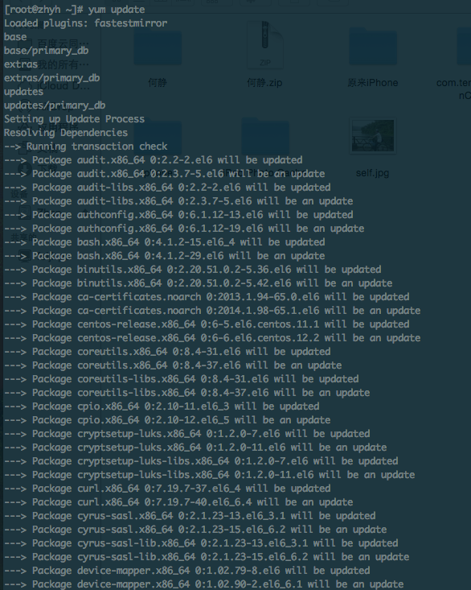
后面会询问是否安装更新，有可能会询问你是否需要导入密钥之类的，输入y即可，如下图所示:
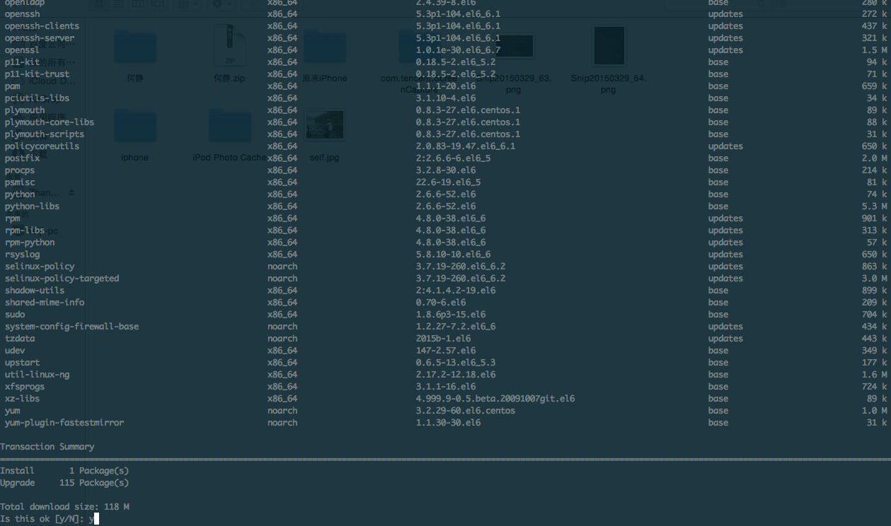
2、删除已经安装的软件
为了减少一些不必要的麻烦，我们需要先卸载系统自带的一些软件，譬如mysql，nginx，php，执行以下命令:
CentOS 执行如下命令:
yum -y remove httpd* php* mysql-server mysql mysql-libs php-mysql
Ubuntu 使用如下命令:
apt-get remove -y apache2 apache2-doc apache2-utils apache2.2-common apache2.2-bin apache2-mpm-prefork apache2-doc apache2-mpm-worker mysql-client mysql-server mysql-common php5 php5-common php5-cgi php5-mysql php5-curl php5-gd
killall apache2
dpkg -l |grep mysql
dpkg -P libmysqlclient15off libmysqlclient15-dev mysql-common
dpkg -l |grep apache
dpkg -P apache2 apache2-doc apache2-mpm-prefork apache2-utils apache2.2-common
dpkg -l |grep php
dpkg -P php5 php5-common php5-cgi php5-mysql php5-curl php5-gd
apt-get purge `dpkg -l | grep php| awk '{print $2}'`
如下图所示:
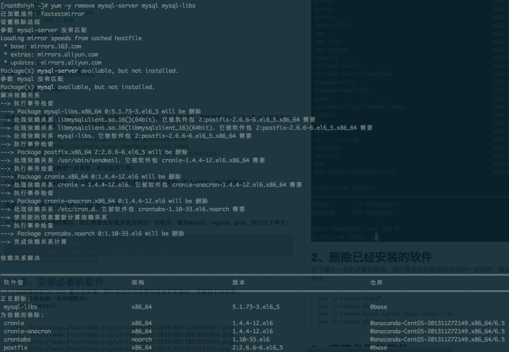
3、安装必要的依赖软件
由于我选择的是CentOS 最小化安装，所以系统中很多软件是没有安装的，需要我手动安装。
执行如下命令安装一些依赖软件:
CentOS 使用如下命令:
yum -y install wget vim git texinfo patch make cmake gcc gcc-c++ gcc-g77 flex bison file libtool libtool-libs autoconf kernel-devel libjpeg libjpeg-devel libpng libpng-devel libpng10 libpng10-devel gd gd-devel freetype freetype-devel libxml2 libxml2-devel zlib zlib-devel glib2 glib2-devel bzip2 bzip2-devel libevent libevent-devel ncurses ncurses-devel curl curl-devel e2fsprogs e2fsprogs-devel krb5 krb5-devel libidn libidn-devel openssl openssl-devel vim-minimal nano fonts-chinese gettext gettext-devel ncurses-devel gmp-devel pspell-devel unzip libcap diffutils
ubuntu 使用如下命令:
apt-get autoremove -y
apt-get -fy install
apt-get install -y build-essential gcc g++ make
apt-get install -y --force-yes wget vim git texinfo patch build-essential gcc g++ make cmake automake autoconf re2c wget cron bzip2 libzip-dev libc6-dev file rcconf flex vim nano bison m4 gawk less make cpp binutils diffutils unzip tar bzip2 libbz2-dev unrar p7zip libncurses5-dev libncurses5 libncurses5-dev libncurses5-dev libtool libevent-dev libpcre3 libpcre3-dev libpcrecpp0 libssl-dev zlibc openssl libsasl2-dev libltdl3-dev libltdl-dev libmcrypt-dev zlib1g zlib1g-dev libbz2-1.0 libbz2-dev libglib2.0-0 libglib2.0-dev libpng3 libjpeg62 libjpeg62-dev libjpeg-dev libpng-dev libpng12-0 libpng12-dev curl libcurl3 libmhash2 libmhash-dev libpq-dev libpq5 gettext libncurses5-dev libcurl4-gnutls-dev libjpeg-dev libpng12-dev libxml2-dev zlib1g-dev libfreetype6 libfreetype6-dev libssl-dev libcurl3 libcurl4-openssl-dev libcurl4-gnutls-dev mcrypt libcap-dev diffutils ca-certificates debian-keyring debian-archive-keyring;
apt-get -fy install
apt-get -y autoremove
过程如下图所示:
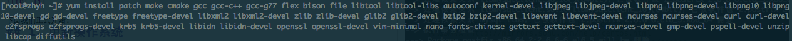
如下图安装结束:
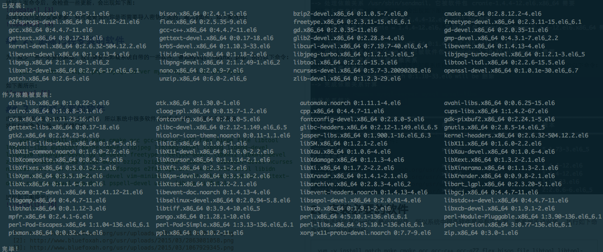
4、安装mysql
本次安装的mysql版本是5.6.选择从搜狐源下载，编译过程漫长。
4.1 下载
wget http://mirrors.sohu.com/mysql/MySQL-5.6/mysql-5.6.23.tar.gz
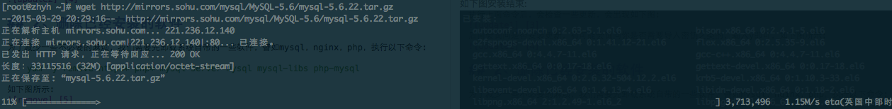
4.2 解压编译
执行如下命令:
tar -zxvf mysql-5.6.23.tar.gz
cd mysql-5.6.23
cmake -DCMAKE_INSTALL_PREFIX=/usr/local/mysql -DEXTRA_CHARSETS=all -DDEFAULT_CHARSET=utf8 -DDEFAULT_COLLATION=utf8_general_ci -DWITH_READLINE=1 -DWITH_SSL=system -DWITH_ZLIB=system -DWITH_EMBEDDED_SERVER=1 -DENABLED_LOCAL_INFILE=1
make -j 2 && make install
编译将是一个漫长得过程。。。不同的机器性能等待时间不同。
make的-j参数可以使make进行并行编译编译。我cpu的个数是2，所以指定为2.
4.3 添加mysql用户
groupadd mysql
useradd -s /sbin/nologin -M -g mysql mysql
4.4 修改配置文件
vim /etc/my.cnf
下面给出一份参考配置(只是测试用，如果要用于生产环境，请自行调配):
# Example MySQL config file for medium systems.
# The following options will be passed to all MySQL clients
[client]
#password = your_password
port = 3306
socket = /tmp/mysql.sock
default-character-set=utf8mb4
# Here follows entries for some specific programs
# The MySQL server
[mysqld]
bind-address=127.0.0.1
port = 3306
socket = /tmp/mysql.sock
datadir = /usr/local/mysql/var
collation-server = utf8mb4_general_ci
character-set-server = utf8mb4
skip-external-locking
key_buffer_size = 16M
max_allowed_packet = 1M
table_open_cache = 64
sort_buffer_size = 512K
net_buffer_length = 8K
read_buffer_size = 256K
read_rnd_buffer_size = 512K
myisam_sort_buffer_size = 8M
# Replication Master Server (default)
# binary logging is required for replication
log-bin=mysql-bin
# binary logging format - mixed recommended
binlog_format=mixed
# required unique id between 1 and 2^32 - 1
# defaults to 1 if master-host is not set
# but will not function as a master if omitted
server-id = 1
# Uncomment the following if you are using InnoDB tables
innodb_data_home_dir = /usr/local/mysql/var
innodb_data_file_path = ibdata1:10M:autoextend
innodb_log_group_home_dir = /usr/local/mysql/var
# You can set .._buffer_pool_size up to 50 - 80 %
# of RAM but beware of setting memory usage too high
innodb_buffer_pool_size = 16M
innodb_additional_mem_pool_size = 2M
# Set .._log_file_size to 25 % of buffer pool size
innodb_log_file_size = 5M
innodb_log_buffer_size = 8M
innodb_flush_log_at_trx_commit = 1
innodb_lock_wait_timeout = 50
[mysqldump]
quick
max_allowed_packet = 16M
[mysql]
no-auto-rehash
# Remove the next comment character if you are not familiar with SQL
#safe-updates
default-character-set=utf8mb4
[myisamchk]
key_buffer_size = 20M
sort_buffer_size = 20M
read_buffer = 2M
write_buffer = 2M
[mysqlhotcopy]
interactive-timeout
4.5 初始化mysql
/usr/local/mysql/scripts/mysql_install_db --defaults-file=/etc/my.cnf --basedir=/usr/local/mysql --datadir=/usr/local/mysql/var --user=mysql
chown -R mysql /usr/local/mysql/var
chgrp -R mysql /usr/local/mysql/.
cp support-files/mysql.server /etc/init.d/mysql
chmod 755 /etc/init.d/mysql
cat > /etc/ld.so.conf.d/mysql.conf<<EOF
/usr/local/mysql/lib
/usr/local/lib
EOF
ldconfig
4.6 启动mysql
/etc/init.d/mysql start
4.7 查看mysql进程
ps -ef|grep mysql
如果看到下图，恭喜你，mysql安装成功:
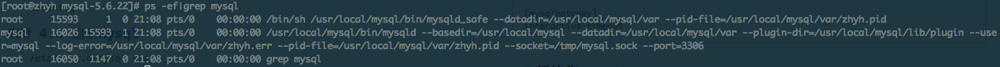
4.8 后期配置
ln -s /usr/local/mysql/lib/mysql /usr/lib/mysql
ln -s /usr/local/mysql/include/mysql /usr/include/mysql
ln -s /usr/local/mysql/bin/mysql /usr/bin/mysql
ln -s /usr/local/mysql/bin/mysqldump /usr/bin/mysqldump
ln -s /usr/local/mysql/bin/myisamchk /usr/bin/myisamchk
ln -s /usr/local/mysql/bin/mysqld_safe /usr/bin/mysqld_safe
登陆mysql:
mysql -uroot -p
修改密码(假定密码为:test123):
use mysql;
update user set password=password('$mysqlrootpwd') where user='root';
flush privileges;
退出，重新登陆:
mysql -uroot -p
整个过程如下图:
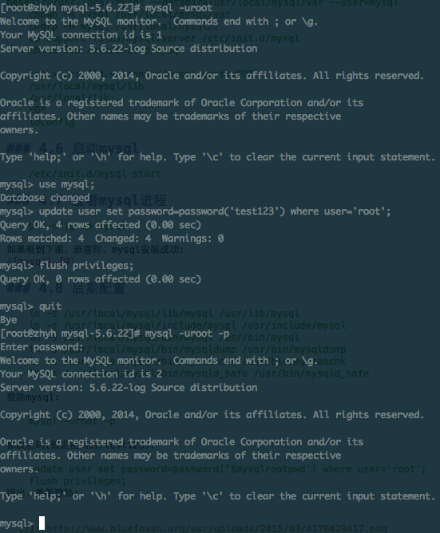
4.9 结束
至此，mysql 已经安装结束。退出到上一层目录
cd ../
5、安装PHP
本次安装的PHP是php 5.3.28，选择从搜狐源下载。
5.1 下载PHP
wget http://mirrors.sohu.com/php/php-5.3.28.tar.gz
5.2 安装依赖
安装依赖的库，我选择从chinaunix.net下载的，速度也还可以。
5.2.1 libiconv
wget http://down1.chinaunix.net/distfiles/libiconv-1.14.tar.gz
tar -zxvf libiconv-1.14.tar.gz
cd libiconv-1.14
./configure
make -j 2&& make install
cd ..
5.2.2 libmcrypt
wget http://down1.chinaunix.net/distfiles/libmcrypt-2.5.7.tar.gz
tar -zxvf libmcrypt-2.5.7.tar.gz
cd libmcrypt-2.5.7
./configure
make -j 2&& make install
ldconfig
cd libltdl/
./configure --enable-ltdl-install
make && make install
cd ../../
5.2.3 mhash
wget http://down1.chinaunix.net/distfiles/mhash-0.9.3.tar.gz
tar -zxvf mhash-0.9.3.tar.gz
cd mhash-0.9.3
./configure
make -j 2 && make install
cd ../
5.2.4 其他
5.3 解压编译
tar -zxvf php-5.3.28.tar.gz
cd php-5.3.28
./configure --prefix=/usr/local/php --with-config-file-path=/usr/local/php/etc --enable-fpm --with-fpm-user=www --with-fpm-group=www --with-mysql=mysqlnd --with-mysqli=mysqlnd --with-pdo-mysql=mysqlnd --with-iconv-dir --with-freetype-dir --with-jpeg-dir --with-png-dir --with-zlib --with-libxml-dir=/usr --enable-xml --disable-rpath --enable-magic-quotes --enable-safe-mode --enable-bcmath --enable-shmop --enable-sysvsem --enable-inline-optimization --with-curl --enable-mbregex --enable-mbstring --with-mcrypt --enable-ftp --with-gd --enable-gd-native-ttf --with-openssl --with-mhash --enable-pcntl --enable-sockets --with-xmlrpc --enable-zip --enable-soap --without-pear --with-gettext --disable-fileinfo
make -j 2 ZEND_EXTRA_LIBS='-liconv' && make install
5.4 配置php
cp php.ini-production /usr/local/php/etc/php.ini
sed -i 's/post_max_size = 8M/post_max_size = 50M/g' /usr/local/php/etc/php.ini
sed -i 's/upload_max_filesize = 2M/upload_max_filesize = 50M/g' /usr/local/php/etc/php.ini
sed -i 's/;date.timezone =/date.timezone = PRC/g' /usr/local/php/etc/php.ini
sed -i 's/short_open_tag = Off/short_open_tag = On/g' /usr/local/php/etc/php.ini
sed -i 's/; cgi.fix_pathinfo=1/cgi.fix_pathinfo=0/g' /usr/local/php/etc/php.ini
sed -i 's/; cgi.fix_pathinfo=0/cgi.fix_pathinfo=0/g' /usr/local/php/etc/php.ini
sed -i 's/;cgi.fix_pathinfo=1/cgi.fix_pathinfo=0/g' /usr/local/php/etc/php.ini
sed -i 's/max_execution_time = 30/max_execution_time = 300/g' /usr/local/php/etc/php.ini
sed -i 's/register_long_arrays = On/;register_long_arrays = On/g' /usr/local/php/etc/php.ini
sed -i 's/magic_quotes_gpc = On/;magic_quotes_gpc = On/g' /usr/local/php/etc/php.ini
sed -i 's/disable_functions =.*/disable_functions = passthru,exec,system,chroot,scandir,chgrp,chown,shell_exec,proc_open,proc_get_status,ini_alter,ini_restore,dl,openlog,syslog,readlink,symlink,popepassthru,stream_socket_server/g' /usr/local/php/etc/php.ini
5.5 后期配置
ln -s /usr/local/php/bin/php /usr/bin/php
ln -s /usr/local/php/bin/phpize /usr/bin/phpize
ln -s /usr/local/php/sbin/php-fpm /usr/bin/php-fpm
cd ..
5.6 安装ZendGuardLoader
mkdir -p /usr/local/zend/
wget http://downloads.zend.com/guard/5.5.0/ZendGuardLoader-php-5.3-linux-glibc23-x86_64.tar.gz
tar -zxvf ZendGuardLoader-php-5.3-linux-glibc23-x86_64.tar.gz
cp ZendGuardLoader-php-5.3-linux-glibc23-x86_64/php-5.3.x/ZendGuardLoader.so /usr/local/zend/
cat >>/usr/local/php/etc/php.ini<<EOF
;eaccelerator
;ionCube
[Zend Optimizer]
zend_extension=/usr/local/zend/ZendGuardLoader.so
zend_loader.enable=1
zend_loader.disable_licensing=0
zend_loader.obfuscation_level_support=3
zend_loader.license_path=
EOF
cd ..
5.7 修改php-fpm配置文件
cat >/usr/local/php/etc/php-fpm.conf<<EOF
[global]
pid = /usr/local/php/var/run/php-fpm.pid
error_log = /usr/local/php/var/log/php-fpm.log
log_level = notice
[www]
listen = /tmp/php-cgi.sock
listen.backlog = -1
listen.allowed_clients = 127.0.0.1
listen.owner = www
listen.group = www
listen.mode = 0666
user = www
group = www
pm = dynamic
pm.max_children = 10
pm.start_servers = 2
pm.min_spare_servers = 1
pm.max_spare_servers = 6
request_terminate_timeout = 100
request_slowlog_timeout = 0
slowlog = var/log/slow.log
EOF
5.8 创建php-fpm启动脚本
vim /etc/init.d/php-fpm
chmod +x /etc/init.d/php-fpm
以下是一份参考:
#! /bin/sh
### BEGIN INIT INFO
# Provides: php-fpm
# Required-Start: $remote_fs $network
# Required-Stop: $remote_fs $network
# Default-Start: 2 3 4 5
# Default-Stop: 0 1 6
# Short-Description: starts php-fpm
# Description: starts the PHP FastCGI Process Manager daemon
### END INIT INFO
prefix=/usr/local/php
exec_prefix=${prefix}
php_fpm_BIN=${exec_prefix}/sbin/php-fpm
php_fpm_CONF=${prefix}/etc/php-fpm.conf
php_fpm_PID=${prefix}/var/run/php-fpm.pid
php_opts="--fpm-config $php_fpm_CONF --pid $php_fpm_PID"
wait_for_pid () {
try=0
while test $try -lt 35 ; do
case "$1" in
'created')
if [ -f "$2" ] ; then
try=''
break
fi
;;
'removed')
if [ ! -f "$2" ] ; then
try=''
break
fi
;;
esac
echo -n .
try=`expr $try + 1`
sleep 1
done
}
case "$1" in
start)
echo -n "Starting php-fpm "
$php_fpm_BIN --daemonize $php_opts
if [ "$?" != 0 ] ; then
echo " failed"
exit 1
fi
wait_for_pid created $php_fpm_PID
if [ -n "$try" ] ; then
echo " failed"
exit 1
else
echo " done"
fi
;;
stop)
echo -n "Gracefully shutting down php-fpm "
if [ ! -r $php_fpm_PID ] ; then
echo "warning, no pid file found - php-fpm is not running ?"
exit 1
fi
kill -QUIT `cat $php_fpm_PID`
wait_for_pid removed $php_fpm_PID
if [ -n "$try" ] ; then
echo " failed. Use force-quit"
exit 1
else
echo " done"
fi
;;
force-quit)
echo -n "Terminating php-fpm "
if [ ! -r $php_fpm_PID ] ; then
echo "warning, no pid file found - php-fpm is not running ?"
exit 1
fi
kill -TERM `cat $php_fpm_PID`
wait_for_pid removed $php_fpm_PID
if [ -n "$try" ] ; then
echo " failed"
exit 1
else
echo " done"
fi
;;
restart)
$0 stop
$0 start
;;
reload)
echo -n "Reload service php-fpm "
if [ ! -r $php_fpm_PID ] ; then
echo "warning, no pid file found - php-fpm is not running ?"
exit 1
fi
kill -USR2 `cat $php_fpm_PID`
echo " done"
;;
*)
echo "Usage: $0 {start|stop|force-quit|restart|reload}"
exit 1
;;
esac
5.9 启动php-fpm
groupadd www
useradd -s /sbin/nologin -g www www
/etc/init.d/php-fpm start
见到如下图代表启动成功:
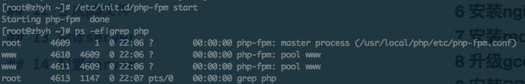
6 安装nginx
6.1 下载nginx
wget http://mirrors.sohu.com/nginx/nginx-1.6.0.tar.gz
6.2 安装依赖
6.2.1 pcre
wget http://down1.chinaunix.net/distfiles/pcre-8.12.tar.bz2
tar -jxvf pcre-8.12.tar.bz2
cd pcre-8.12
./configure
make -j 2 && make install
cd ..
6.3 解压编译nginx
tar -zxvf nginx-1.6.0.tar.gz
cd nginx-1.6.0
./configure --user=www --group=www --prefix=/usr/local/nginx --with-http_stub_status_module --with-http_ssl_module --with-http_gzip_static_module --with-ipv6
make -j 2 && make install
cd ..
ln -s /usr/local/nginx/sbin/nginx /usr/bin/nginx
6.4 配置nginx
/usr/local/nginx/conf/nginx.conf
下面是一份参考配置:
user www www;
worker_processes auto;
error_log /home/wwwlogs/nginx_error.log crit;
pid /usr/local/nginx/logs/nginx.pid;
#Specifies the value for maximum file descriptors that can be opened by this process.
worker_rlimit_nofile 51200;
events
{
use epoll;
worker_connections 51200;
multi_accept on;
}
http
{
include mime.types;
default_type application/octet-stream;
server_names_hash_bucket_size 128;
client_header_buffer_size 32k;
large_client_header_buffers 4 32k;
client_max_body_size 50m;
sendfile on;
tcp_nopush on;
keepalive_timeout 60;
tcp_nodelay on;
fastcgi_connect_timeout 300;
fastcgi_send_timeout 300;
fastcgi_read_timeout 300;
fastcgi_buffer_size 64k;
fastcgi_buffers 4 64k;
fastcgi_busy_buffers_size 128k;
fastcgi_temp_file_write_size 256k;
gzip on;
gzip_min_length 1k;
gzip_buffers 4 16k;
gzip_http_version 1.0;
gzip_comp_level 2;
gzip_types text/plain application/x-javascript text/css application/xml;
gzip_vary on;
gzip_proxied expired no-cache no-store private auth;
gzip_disable "MSIE [1-6]\.";
#limit_conn_zone $binary_remote_addr zone=perip:10m;
##If enable limit_conn_zone,add "limit_conn perip 10;" to server section.
server_tokens off;
#log format
log_format access '$remote_addr - $remote_user [$time_local] "$request" '
'$status $body_bytes_sent "$http_referer" '
'"$http_user_agent" $http_x_forwarded_for';
server
{
listen 80 default;
#listen [::]:80 default ipv6only=on;
server_name www.lnmp.org;
index index.html index.htm index.php;
root /home/wwwroot/default;
#error_page 404 /404.html;
location ~ [^/]\.php(/|$)
{
# comment try_files $uri =404; to enable pathinfo
try_files $uri =404;
fastcgi_pass unix:/tmp/php-cgi.sock;
fastcgi_index index.php;
include fastcgi.conf;
#include pathinfo.conf;
}
location /nginx_status {
stub_status on;
access_log off;
}
location ~ .*\.(gif|jpg|jpeg|png|bmp|swf)$
{
expires 30d;
}
location ~ .*\.(js|css)?$
{
expires 12h;
}
access_log /home/wwwlogs/access.log access;
}
include vhost/*.conf;
}
6.5 后期配置
mkdir -p /home/wwwroot/default
chmod +w /home/wwwroot/default
mkdir -p /home/wwwlogs
chmod 777 /home/wwwlogs
chown -R www:www /home/wwwroot/default
6.6 编写nginx启动脚本
vim /etc/init.d/nginx
chmod +x /etc/init.d/nginx
下面是一份参考配置:
#! /bin/sh
# chkconfig: 2345 55 25
# Description: Startup script for nginx webserver on Debian. Place in /etc/init.d and
# run 'update-rc.d -f nginx defaults', or use the appropriate command on your
# distro. For CentOS/Redhat run: 'chkconfig --add nginx'
### BEGIN INIT INFO
# Provides: nginx
# Required-Start: $all
# Required-Stop: $all
# Default-Start: 2 3 4 5
# Default-Stop: 0 1 6
# Short-Description: starts the nginx web server
# Description: starts nginx using start-stop-daemon
### END INIT INFO
# Author: licess
# website: http://lnmp.org
PATH=/usr/local/sbin:/usr/local/bin:/sbin:/bin:/usr/sbin:/usr/bin
NAME=nginx
NGINX_BIN=/usr/local/nginx/sbin/$NAME
CONFIGFILE=/usr/local/nginx/conf/$NAME.conf
PIDFILE=/usr/local/nginx/logs/$NAME.pid
SCRIPTNAME=/etc/init.d/$NAME
case "$1" in
start)
echo -n "Starting $NAME... "
if netstat -tnpl | grep -q nginx;then
echo "$NAME (pid `pidof $NAME`) already running."
exit 1
fi
$NGINX_BIN -c $CONFIGFILE
if [ "$?" != 0 ] ; then
echo " failed"
exit 1
else
echo " done"
fi
;;
stop)
echo -n "Stoping $NAME... "
if ! netstat -tnpl | grep -q nginx; then
echo "$NAME is not running."
exit 1
fi
$NGINX_BIN -s stop
if [ "$?" != 0 ] ; then
echo " failed. Use force-quit"
exit 1
else
echo " done"
fi
;;
status)
if netstat -tnpl | grep -q nginx; then
PID=`pidof nginx`
echo "$NAME (pid $PID) is running..."
else
echo "$NAME is stopped"
exit 0
fi
;;
force-quit)
echo -n "Terminating $NAME... "
if ! netstat -tnpl | grep -q nginx; then
echo "$NAME is not running."
exit 1
fi
kill `pidof $NAME`
if [ "$?" != 0 ] ; then
echo " failed"
exit 1
else
echo " done"
fi
;;
restart)
$SCRIPTNAME stop
sleep 1
$SCRIPTNAME start
;;
reload)
echo -n "Reload service $NAME... "
if netstat -tnpl | grep -q nginx; then
$NGINX_BIN -s reload
echo " done"
else
echo "$NAME is not running, can't reload."
exit 1
fi
;;
configtest)
echo -n "Test $NAME configure files... "
$NGINX_BIN -t
;;
*)
echo "Usage: $SCRIPTNAME {start|stop|force-quit|restart|reload|status|configtest}"
exit 1
;;
esac
6.6 测试nginx
6.6.1 写php测试代码
cat >/home/wwwroot/default/index.php<<EOF
<?
phpinfo();
?>
EOF
6.6.2
启动nginx
/etc/init.d/nginx start
ps -ef|grep nginx
见到下图，代表启动成功:
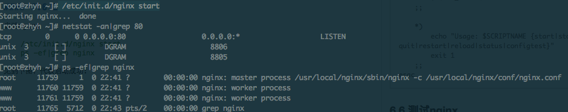
如果你开启了selinux，请关闭，否则访问不了:
sed -i 's/SELINUX=enforcing/SELINUX=disabled/g' /etc/selinux/config
临时关闭selinux:
setenforce 0
关闭防火墙:
service iptables stop
通过浏览器访问下,如下图:
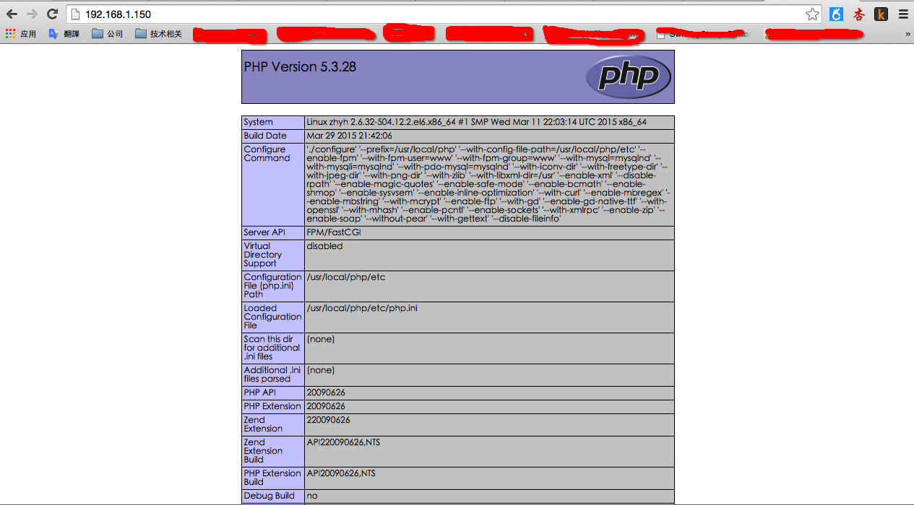
7 设置开机启动
chkconfig --level 345 php-fpm on
chkconfig --level 345 nginx on
chkconfig --level 345 mysql on
7 安装redis
7.1 下载redis
wget http://download.redis.io/releases/redis-2.8.19.tar.gz
这里会快很多:
wget http://download.redis.io/releases/redis-2.8.19.tar.gz
7.2 解压编译redis
tar -zxvf redis-2.8.19.tar.gz
cd redis-2.8.19
make PREFIX=/usr/local/redis install
7.3 配置redis
mkdir -p /usr/local/redis/etc/
cp redis.conf /usr/local/redis/etc/
sed -i 's/daemonize no/daemonize yes/g' /usr/local/redis/etc/redis.conf
cd ..
7.4 编写redis启动脚本
vim /etc/init.d/redis
chmod +x /etc/init.d/redis
下面是一份参考配置:
#! /bin/bash
#
# redis - this script starts and stops the redis-server daemon
#
# chkconfig: 2345 80 90
# description: Redis is a persistent key-value database
#
### BEGIN INIT INFO
# Provides: redis
# Required-Start: $syslog
# Required-Stop: $syslog
# Should-Start: $local_fs
# Should-Stop: $local_fs
# Default-Start: 2 3 4 5
# Default-Stop: 0 1 6
# Short-Description: redis-server daemon
# Description: redis-server daemon
### END INIT INFO
REDISPORT=6379
EXEC=/usr/local/redis/bin/redis-server
REDIS_CLI=/usr/local/redis/bin/redis-cli
PIDFILE=/var/run/redis.pid
CONF="/usr/local/redis/etc/redis.conf"
case "$1" in
start)
if [ -f $PIDFILE ]
then
echo "$PIDFILE exists, process is already running or crashed"
else
echo "Starting Redis server..."
$EXEC $CONF
fi
if [ "$?"="0" ]
then
echo "Redis is running..."
fi
;;
stop)
if [ ! -f $PIDFILE ]
then
echo "$PIDFILE does not exist, process is not running"
else
PID=$(cat $PIDFILE)
echo "Stopping ..."
$REDIS_CLI -p $REDISPORT shutdown
while [ -x ${PIDFILE} ]
do
echo "Waiting for Redis to shutdown ..."
sleep 1
done
echo "Redis stopped"
fi
;;
restart)
${0} stop
${0} start
;;
*)
echo "Usage: /etc/init.d/redis {start|stop|restart}" >&2
exit 1
esac
7.5 启动redis
/etc/init.d/redis start
查看redis是否启动
ps -ef|grep redis
如果看到如下图，恭喜你，启动成功:
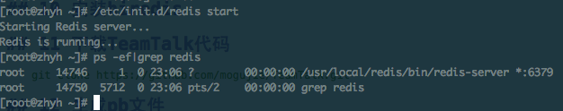
8 升级gcc，gdb等(非常漫长,如果系统中自带的g++支持C++11，可跳过此步骤)
8.1 下载gcc4.9.2
使用日本的源可能会快些:
wget http://ftp.tsukuba.wide.ad.jp/software/gcc/releases/gcc-4.9.2/gcc-4.9.2.tar.gz
8.2 解压编译gcc4.9.2
tar -zxvf gcc-4.9.2.tar.gz
cd gcc-4.9.2
./contrib/download_prerequisites
mkdir gcc-build-4.9.2
cd gcc-build-4.9.2
../configure --prefix=/usr -enable-checking=release -enable-languages=c,c++ -disable-multilib
make -j 2 && make install
cd ../../
8.3 下载termcap
wget ftp://ftp.gnu.org/gnu/termcap/termcap-1.3.1.tar.gz
8.4 解压编译termcap
tar -zxvf termcap-1.3.1.tar.gz
cd termcap-1.3.1
./configure --prefix=/usr
make -j 2 && make install
8.5 下载gdb
wget http://ftp.gnu.org/gnu/gdb/gdb-7.9.tar.gz
8.6 解压编译gdb
tar -zxvf gdb-7.9.tar.gz
cd gdb-7.9
./configure --prefix=/usr
make -j 2 && make install
9 重启电脑
shutdown -r now
10 安装PB
10.1 下载pb
wget https://github.com/google/protobuf/releases/download/v2.6.1/protobuf-2.6.1.tar.gz
10.2 解压编译pb
tar -zxvf protobuf-2.6.1
cd protobuf-2.6.1
./configure --prefix=/usr/local/protobuf
make -j 2 && make install
11 下载TeamTalk代码
git clone https://github.com/mogujie/TeamTalk.git
12 生成pb文件
12.1 拷贝pb相关文件
拷贝pb的库、头文件到TeamTalk相关目录中:
mkdir -p /root/TeamTalk/server/src/base/pb/lib/linux/
cp /usr/local/protobuf/lib/libprotobuf-lite.a /root/TeamTalk/server/src/base/pb/lib/linux/
cp -r /usr/local/protobuf/include/* /root/TeamTalk/server/src/base/pb/
12.2 生成pb协议
cd /root/TeamTalk/pb
执行:
export PATH=$PATH:/usr/local/protobuf/bin
export LD_LIBRARY_PATH=$LD_LIBRARY_PATH:/usr/local/protobuf/lib
sh create.sh
生成协议相关源码文件。
再执行:
sh sync.sh
将相关文件拷贝到server 目录下。
13 安装依赖
cd /root/TeamTalk/server/src
sh make_log4cxx.sh
sh make_hiredis.sh
14 编译server
14.1 编译
由于我们是源码安装mysql的，所以对db_proxy_server中的CMakeList做一定的修改.
原来:
SET(MYSQL_INCLUDE_DIR /usr/include/mysql)
SET(MYSQL_LIB /usr/lib64/mysql)
修改为:
SET(MYSQL_INCLUDE_DIR /usr/local/mysql/include)
SET(MYSQL_LIB /usr/local/mysql/lib)
进入server目录下，执行:
sh build.sh version 1.0.0
如果一切顺利，你将会看到如下画面:
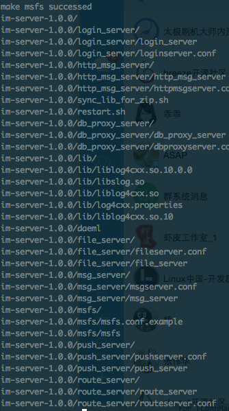
15 配置server(时间太晚了，明天再来写吧)
配置就以本机192.168.1.150 为例。
15.1 配置文件说明:
15.1.1 login_server
ClientListenIP=0.0.0.0 # can use multiple ip, seperate by ';'
ClientPort=8008
HttpListenIP=0.0.0.0
HttpPort=8080
MsgServerListenIP=0.0.0.0 # can use multiple ip, seperate by ';'
MsgServerPort=8100
msfs=http://127.0.0.1:8700/
discovery=http://127.0.0.1/api/discovery
ClientListenIP:目前已经作废。
ClientPort:与上一个配套，同样作废。
HttpListenIP:供客户端过来获取msg_server及其他参数的接口地址，走http协议。
HttpPort:与上一个配套使用。
MsgServerListenIP:用于监听msg_server上报信息使用。
MsgServerPort:与上一个配套使用。msg_server启动的时候回来连接该ip:port，以上报自己的信息。
在运行过程中，也会实时将自己的信息汇报给login_server。
msfs:小文件存储的地址，该配置是提供给客户端获取参数时使用。
discovery:发现内容获取地址，该配置是提供给客户端获取参数时使用。
参考配置:
ClientListenIP=192.168.1.150
ClientPort=8008
HttpListenIP=192.168.1.150
HttpPort=8080
MsgServerListenIP=192.168.1.150
MsgServerPort=8100
msfs=http://192.168.1.150:8700/
discovery=http://192.168.1.150/api/discovery
15.1.2 route_server
ListenIP=0.0.0.0 # Listening IP
ListenMsgPort=8200 # Listening Port for MsgServer
route_server配置比较简单，一个监听ip，一个监听port就OK了，供msg_server连接上来用。
参考配置:
ListenIP=192.168.1.150
ListenMsgPort=8200
15.1.3 http_msg_server
ListenIP=0.0.0.0
ListenPort=8400
ConcurrentDBConnCnt=4
DBServerIP1=127.0.0.1
DBServerPort1=10600
DBServerIP2=127.0.0.1
DBServerPort2=10600
RouteServerIP1=localhost
RouteServerPort1=8200
#RouteServerIP2=localhost
#RouteServerPort2=8201
ListenIP:监听IP，供其他人来调用http_msg_server接口，比如，php在创建群组的时候，就会来调用http_msg_server的接口。
ListenPort:监听端口，与上一个配套使用。
ConcurrentDBConnCnt:DB数目，目前必须配置为2的整数倍，是历史遗留问题，后期会修复。
DBServerIP(x):db_proxy_server监听的IP，http_msg_server会主动去连接。
DBServerPort(x):db_proxy_server监听的Port
RouteServerIP(x):route_server监听的IP，http_msg_server会主动去连接。
RouteServer(x):route_server监听的Port
参考配置:
ListenIP=192.168.1.150
ListenPort=8400
ConcurrentDBConnCnt=4
DBServerIP1=192.168.1.150
DBServerPort1=10600
DBServerIP2=192.168.1.150
DBServerPort2=10600
RouteServerIP1=192.168.1.150
RouteServerPort1=8200
15.1.4 msg_server
ListenIP=0.0.0.0
ListenPort=8000
ConcurrentDBConnCnt=2
DBServerIP1=127.0.0.1
DBServerPort1=10600
DBServerIP2=127.0.0.1
DBServerPort2=10600
LoginServerIP1=127.0.0.1
LoginServerPort1=8100
#LoginServerIP2=localhost
#LoginServerPort2=8101
RouteServerIP1=127.0.0.1
RouteServerPort1=8200
#RouteServerIP2=localhost
#RouteServerPort2=8201
PushServerIP1=127.0.0.1
PushServerPort1=8500
FileServerIP1=127.0.0.1
FileServerPort1=8600
#FileServerIP2=localhost
#FileServerPort2=8601
IpAddr1=127.0.0.1 #电信IP
IpAddr2=127.0.0.1 #网通IP
MaxConnCnt=100000
#AES 密钥
aesKey=12345678901234567890123456789012
ListenIP:监听客户端连接上来的IP。
ListenPort:与上一个配套使用，监听客户端连接的port。
ConcurrentDBConnCnt:db_proxy_server个数，同http_msg_server 一样。
DBServerIP(x):db_proxy_server监听的ip，msg_server主动去连接。
DBServerPort(x):db_proxy_server监听的port。
LoginServerIP(x):login_server监听的ip，msg_server会主动去连接，汇报本机信息。
LoginServerPort(x):login_server监听的port。
RouteServerIP(x):route_server监听的IP，msg_server主动去连接。
RouteServerPort(x):route_server监听的port。
PushServerIP(x):push_server监听的IP，msg_server会主动去连接，给ios系统推送消息。
PushServerPort(x):push_server监听的port。
FileServerIP(x):file_server监听的IP，msg_server会主动去连接，用于文件传输，暂时未用到。
FileServerPort(x):file_server监听的port。
IpAddr1:msg_server监听的ip，用于汇报给login_server，便于login_server在客户端请求的时候返回给客户端。注意，这个ip一定要是客户端能连接的ip，之前发现好多人配置成127.0.0.1，这是不行的。
IpAddr2:同上。
aesKey:消息文本加密密钥.这里配置主要在msg_server向push_server推送的时候需要将加密的消息进行解密。
参考配置:
ListenIP=192.168.1.150
ListenPort=8000
ConcurrentDBConnCnt=2
DBServerIP1=192.168.1.150
DBServerPort1=10600
DBServerIP2=192.168.1.150
DBServerPort2=10600
LoginServerIP1=192.168.1.150
LoginServerPort1=8100
RouteServerIP1=192.168.1.150
RouteServerPort1=8200
PushServerIP1=192.168.1.150
PushServerPort1=8500
FileServerIP1=192.168.1.150
FileServerPort1=8600
IpAddr1=192.168.1.150 #电信IP
IpAddr2=192.168.1.150 #网通IP
MaxConnCnt=100000
#AES 密钥
aesKey=12345678901234567890123456789012
15.1.5 db_proxy_server
ListenIP=127.0.0.1
ListenPort=10600
ThreadNum=48 # double the number of CPU core
MsfsSite=127.0.0.1
#configure for mysql
DBInstances=teamtalk_master,teamtalk_slave
#teamtalk_master
teamtalk_master_host=127.0.0.1
teamtalk_master_port=3306
teamtalk_master_dbname=teamtalk
teamtalk_master_username=root
teamtalk_master_password=12345
teamtalk_master_maxconncnt=16
#teamtalk_slave
teamtalk_slave_host=127.0.0.1
teamtalk_slave_port=3306
teamtalk_slave_dbname=teamtalk
teamtalk_slave_username=root
teamtalk_slave_password=12345
teamtalk_slave_maxconncnt=16
#configure for unread
CacheInstances=unread,group_set,token,group_member
#未读消息计数器的redis
unread_host=127.0.0.1
unread_port=6379
unread_db=1
unread_maxconncnt=16
#群组设置redis
group_set_host=127.0.0.1
group_set_port=6379
group_set_db=2
group_set_maxconncnt=16
#deviceToken redis
token_host=127.0.0.1
token_port=6379
token_db=4
token_maxconncnt=16
#GroupMember
group_member_host=127.0.0.1
group_member_port=6379
group_member_db=5
group_member_maxconncnt=48
#AES 密钥
aesKey=12345678901234567890123456789012
ListenIP:db_proxy_server监听的IP。
ListenPort:db_proxy_server监听的port
ThreadNum:工作线程个数。
MsfsSite:配置msfs服务器的地址，用于发送语音的时候上传保存语音文本。
DBInstances:db实例名称。一般配置一主一从即可，其他根据自己的需求修改。
(xxxx)_host:xxxx实例的ip
(xxxx)_port:xxxx实例的port
(xxxx)_dbname:xxxx实例的scheme名称
(xxxx)_username:xxxx实例的用户名
(xxxx)_password:xxxx实例的密码
(xxxx)_maxconncnt:xxxx实例最大连接数
CacheInstances:cache实例名称。
(xxxx)_host:xxxx实例的ip
(xxxx)_port:xxxx实例的port
(xxxx)_db:xxxx实例的db
(xxxx)_maxconncnt:xxxx
aesKey:消息加密密钥。
目前我们db实例配置的一主一从，cache实例配置了5个实例，分别是:
unread:主要用于未读计数。
group_set:群组设置。设置屏蔽群组。
token:主要用于保存ios系统的token。
group_member:保存群成员信息。
参考配置:
ListenIP=192.168.1.150
ListenPort=10600
ThreadNum=48 # double the number of CPU core
MsfsSite=http://192.168.1.150:8700/
#configure for mysql
DBInstances=teamtalk_master,teamtalk_slave
#teamtalk_master
teamtalk_master_host=192.168.1.150
teamtalk_master_port=3306
teamtalk_master_dbname=teamtalk
teamtalk_master_username=teamtalk
teamtalk_master_password=test@123
teamtalk_master_maxconncnt=16
#teamtalk_slave
teamtalk_slave_host=192.168.1.150
teamtalk_slave_port=3306
teamtalk_slave_dbname=teamtalk
teamtalk_slave_username=teamtalk
teamtalk_slave_password=test@123
teamtalk_slave_maxconncnt=16
#configure for unread
CacheInstances=unread,group_set,token,group_member
#未读消息计数器的redis
unread_host=192.168.1.150
unread_port=6379
unread_db=1
unread_maxconncnt=16
#群组设置redis
group_set_host=192.168.1.150
group_set_port=6379
group_set_db=2
group_set_maxconncnt=16
#deviceToken redis
token_host=192.168.1.150
token_port=6379
token_db=4
token_maxconncnt=16
#GroupMember
group_member_host=192.168.1.150
group_member_port=6379
group_member_db=5
group_member_maxconncnt=48
#AES 密钥
aesKey=12345678901234567890123456789012
16、更新
16.1 导入mysql
登陆mysql:
mysql -uroot -p
输入密码:test123.
创建TeamTalk数据库:
create database teamtalk
见到如下:
mysql> create database teamtalk;
Query OK, 1 row affected (0.00 sec)
创建成功。
创建teamtalk用户并给teamtalk用户授权teamtalk的操作:
grant select,insert,update,delete on teamtalk.* to 'teamtalk'@'%' identified by 'test@123';
flush privileges;
导入数据库.
use teamtalk;
source /root/TeamTalk/auto_setup/mariadb/conf/ttopen.sql;
show tables;
如下:
mysql> show tables;
+--------------------+
| Tables_in_teamtalk |
+--------------------+
| IMAdmin |
| IMAudio |
| IMDepart |
| IMDiscovery |
| IMGroup |
| IMGroupMember |
| IMGroupMessage_0 |
| IMGroupMessage_1 |
| IMGroupMessage_2 |
| IMGroupMessage_3 |
| IMGroupMessage_4 |
| IMGroupMessage_5 |
| IMGroupMessage_6 |
| IMGroupMessage_7 |
| IMMessage_0 |
| IMMessage_1 |
| IMMessage_2 |
| IMMessage_3 |
| IMMessage_4 |
| IMMessage_5 |
| IMMessage_6 |
| IMMessage_7 |
| IMRecentSession |
| IMRelationShip |
| IMUser |
+--------------------+
25 rows in set (0.00 sec)
mysql>
16.2 修改php
执行如下命令:
cd /home/wwwroot/default
cp -r /root/TeamTalk/php/* /home/wwwroot/default
修改config.php:
vim application/config/config.php
修改第18-19行:
$config['msfs_url'] = 'http://192.168.1.150:8700/';
$config['http_url'] = 'http://192.168.1.150:8400';
修改database.php
vim application/config/database.php
修改52-54行:
$db['default']['hostname'] = '192.168.1.150';
$db['default']['username'] = 'tamtalk';
$db['default']['password'] = 'test@123';
$db['default']['database'] = 'teamtalk';
访问后，看到如下图:
16.3 修改nginx.conf
之前给出的配置有点问题,新配置如下:
user www www;
worker_processes auto;
error_log /home/wwwlogs/nginx_error.log crit;
pid /usr/local/nginx/logs/nginx.pid;
#Specifies the value for maximum file descriptors that can be opened by this process.
worker_rlimit_nofile 51200;
events
{
use epoll;
worker_connections 51200;
multi_accept on;
}
http
{
include mime.types;
default_type application/octet-stream;
server_names_hash_bucket_size 128;
client_header_buffer_size 32k;
large_client_header_buffers 4 32k;
client_max_body_size 50m;
sendfile on;
tcp_nopush on;
keepalive_timeout 60;
tcp_nodelay on;
fastcgi_connect_timeout 300;
fastcgi_send_timeout 300;
fastcgi_read_timeout 300;
fastcgi_buffer_size 64k;
fastcgi_buffers 4 64k;
fastcgi_busy_buffers_size 128k;
fastcgi_temp_file_write_size 256k;
gzip on;
gzip_min_length 1k;
gzip_buffers 4 16k;
gzip_http_version 1.0;
gzip_comp_level 2;
gzip_types text/plain application/x-javascript text/css application/xml;
gzip_vary on;
gzip_proxied expired no-cache no-store private auth;
gzip_disable "MSIE [1-6]\.";
server_tokens off;
log_format access '$remote_addr - $remote_user [$time_local] "$request" '
'$status $body_bytes_sent "$http_referer" '
'"$http_user_agent" $http_x_forwarded_for';
server
{
listen 80;
server_name 192.168.1.150;
index index.html index.htm index.php default.html default.htm default.php;
root /home/wwwroot/default;
location ~ \.php($|/) {
fastcgi_pass unix:/tmp/php-cgi.sock;
fastcgi_index index.php;
fastcgi_split_path_info ^(.+\.php)(.*)$;
fastcgi_param PATH_INFO $fastcgi_path_info;
fastcgi_param SCRIPT_FILENAME $document_root$fastcgi_script_name;
include fastcgi_params;
}
location ~ .*\.(gif|jpg|jpeg|png|bmp|swf)$
{
expires 30d;
}
location ~ .*\.(js|css)?$
{
expires 12h;
}
if (!-e $request_filename) {
rewrite ^/(.*)$ /index.php/$1 last;
break;
}
}
}
17、测试
在后台添加test用户，运行ios 模拟器，登陆看到如下图
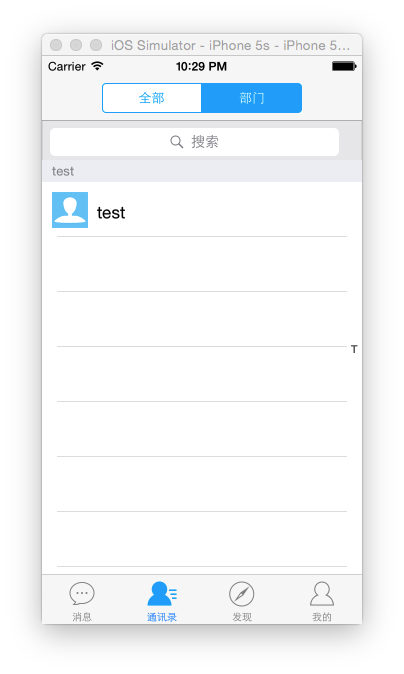
18、virtualBox 环境
置于怎么加载虚拟机，怎么运行虚拟机请自行百度，谷歌。
18.1 我虚拟机的环境
链接: http://pan.baidu.com/s/1sjx8g49 密码: 4572
18.2 虚拟机硬盘
因网盘大小限制1G，所以将虚拟机硬盘切分成3个文件上传:
链接: http://pan.baidu.com/s/1mgDXvwW 密码: tgzp
请使用如下命令合并解压:
cat CentOS-hd.tar.gz.* > CentOS-hd.tar.gz
tar -zxvf CentOS-hd.tar.gz
18.3 账号信息
虚拟机账号信息如下:
linux账号密码:root/123456
mysql root账号密码:root/test123
mysql teamtalk账号密码:teamtalk/test@123
php 后台账号密码:admin/admin
测试用户账号密码:test/test
18.4 运行
启动虚拟机后，运行如下命令:
ps -ef|grep server
如果看到如下:
[root@zhyh ~]# ps -ef|grep server
root 1653 1 0 22:13 ? 00:00:05 /usr/local/redis/bin/redis-server *:6379
root 1658 1 1 22:13 ? 00:00:21 ./db_proxy_server
root 1717 1 0 22:13 ? 00:00:02 ./http_msg_server
root 1729 1 0 22:13 ? 00:00:02 ./route_server
root 1737 1 0 22:14 ? 00:00:02 ./login_server
root 1757 1 0 22:15 ? 00:00:02 ./msg_server
root 1788 1774 0 22:34 pts/2 00:00:00 grep server
如果没有发现:db_proxy_server, http_msg_server,route_server,login_server,msg_server的进程，请执行如下命令启动:
cd /usr/local/teamtalk
cd xxxx
../daeml xxxx
xxx代表相应的程序名。通过查看:xxxx/log/default.log 查看程序错误。
18.5 redis,php,nginx,mysql的启动，停止与重启
/etc/init.d/redis {start|stop|restart}
/etc/init.d/php-fpm {start|stop|force-quit|restart|reload}
/etc/init.d/nginx {start|stop|force-quit|restart|reload|status|configtest}
/etc/init.d/mysql {start|stop|restart|reload|force-reload|status} [ MySQL server options ]
7 打赏
如果您觉得这篇文章对您有帮助，欢迎您给我打赏。通过微信扫一扫，即可。
virtual box 网络是bridge 无线网卡吗？ 192.168.1.150可以在真机上访问吗
我配置的是桥接网路。
sdfasdf
已按以上步骤编译完环境，现在想要测试，能否在出一个php后台管理操作和windows客户端访问的教程，感谢！
我也像要
请问，配置完db_proxy_server, http_msg_server,route_server,login_server,msg_server等，需要怎么样才能启动它们？
没有看到启动它们的步骤。
18.4中运行已经介绍了如何启动。
Daemon loader
- Launch specified program as daemon.
- Loading msg_server as daemon, please wait ......
启动只显示这个 没有启动成功 什么情况呢
是否成功，请通过日志查看。
日志就显示这个，看进程也没那几个，不知道为什么启动不起来，编译成功后启动还要依赖什么？
日志就显示这个，看进程也没那几个，不知道为什么启动不起来，编译成功后启动还要依赖什么？是自己编译得到，可能用你的虚拟机可以，不过我希望自己在vps上编译
Hi，小辉，这个问题你解决了吗？
没有，不知道哪里出问题
同问，我的db_proxy_server 和msg_server启动不起来，按照下面的方法也没启动，请问你们现在解决了么
遇到同样的问题,启动只有 Loading ./db_proxy_server as daemon, please wait ......
日志在哪？没有生成日志文件。
同问，一样也是这样的提示
日志在im_server路径下的对应子模块的log文件里
我也遇到这样的情况，6个进程，还有3个进程没有启动，或者没有看到。
我也是只启动了几个进程，db的就没起来，检查好多遍配置，怎么看也没问题
楼主有解决吗？
请参考【蓝狐】新版TeamTalk安装部署常见问题汇总里面的第二条。
你好，多谢提供这么好的文章，现在遇到了个问题还请帮忙，多谢啦！
已经下载了你的 virtualBox 虚拟机环境，服务器是良好的跑起来了，但是现在想编译Android客户端，看到在你的虚拟机里面有Android客户端源码，但是这块编译的时候有什么注意事项吗？
现在编译完了的包总提示连接不上服务器，好像是库什么没弄正确？
虚拟机里面的Android客户端是从github上clone下来的，我们使用的是Android studio编译的，自己的服务器，需要修改login_server地址。
多谢安卓客户端的问题已解决！
虚拟机里面的Android客户端是从github上clone下来的，我们使用的是Android studio编译的，自己的服务器，需要修改login_server地址。
有人编译成功并能运行TTAndroidClient吗？
我刚刚还帮助一位网友编译了。
我都按照上面的配置了，ngnix启动了，电脑本机但是就是访问不到web,虚拟机跟本机是能互相ping通的。和纳闷。
解决了吗， 我是在macbook os x上装的virtualbox, 也是主机和虚拟机可以互相ping通， 但主机访问不了虚拟机上的web, 也访问不了各种端口， iptables也关了，不知道为什么？？
1.虚拟机的联网模式要改成桥接，然后确保本机ip和虚拟机ip在同一个网段。
2.关闭虚拟机的防火墙。
另外确认一下虚拟机内部能不能访问。再根据log分析。
我参照你这个文档部署完成之后，用ps -ef|grep server去查看发现没有文中提到的服务，然后按照你的方式去启动的时候，也无法启动；
我想问下，这些相关服务是自己启动的吗？日志目录在那个目录下？谢谢。
已经可以了，在window下有个虚拟机的网络设备，上面的ip地址跟虚拟机的ip重复了。一直访问不到。把windows下的虚拟机的网络设备ip改了之后就可以了，这个问题很难找，我头都搞 大了。
你能不能帮我解决下服务启动的问题，我使用文中的方法启动服务的时候一直提示 please wait......
查看服务也没有启动起来，如果查看日志的话，我想问问看那个目录下的日志？
你指的是网络配置里面的ipv4地址吗?我的没有重复但是也ping不通啊 但是这两个ip不在网关 求助
1.虚拟机的联网模式要改成桥接，然后确保本机ip和虚拟机ip在同一个网段。
2.关闭虚拟机的防火墙。
另外确认一下虚拟机内部能不能访问。再根据log分析。
把虚拟机的联网模式改成桥接。
[root@jackymysql msg_server]# ./msg_server
./msg_server: error while loading shared libraries: libslog.so: cannot open shared object file: No such file or directory
[root@jackymysql msg_server]# find / -name libslog.so
/root/TeamTalk/server/src/slog/libslog.so
/root/TeamTalk/server/src/base/slog/lib/libslog.so
这个问题怎么解决？
我也遇到了这个问题。求问是怎么解决的？？？
这个动态库的问题，只需要把这个.so文件放在/lib64中，然后执行ldconfig就可以了
能讲一下一键部署教程吗？我用新版的一键部署无法完成。好像tt.zip和m-server-*.tar.gz这两压缩文件没有在目录中，请指点一下。
5.6.22已经下不了了wget http://mirrors.sohu.com/mysql/MySQL-5.6/mysql-5.6.22.tar.gz
下5.6.24版本的吧 wget http://mirrors.sohu.com/mysql/MySQL-5.6/mysql-5.6.24.tar.gz
谢谢，已经修改为5.6.23版本了。
23也下不了了
改成mysql-5.6.28
5.2.1 libiconv在CentoS 7上make会出下面的错误
libiconv stdio.h:1010:1: error: ‘gets’ undeclared here
解决方法：
cd srclib/
sed -i -e '/gets is a security/d' ./stdio.in.h
THX
dui
按照这个方法，部署完，但是网页上登陆不进去。admin admin登陆失败
搞定了！db_proxy_server没起来的原因是/etc/my.cnf 中监听的是127.0.0.1
请问部署完，但是网页上登陆不进去, 是因为db_proxy_server没起来的原因是/etc/my.cnf 中监听的是127.0.0.1 ?
我现在部署完，但是网页上登陆不进去,请问你怎么解决的?
执行 sh build.sh version 1.0.0 的时候 报
/usr/bin/ld: cannot find -llog4cxx
collect2: 错误：ld 返回 1
make[2]: *** [libslog.so] 错误 1
make[1]: *** [CMakeFiles/slog.dir/all] 错误 2
make: *** [all] 错误 2
make slog failed
这个错误 我看了一下 是src/slog 中执行make 时报的
请问这个怎么解决
楼主统一回复下啊，我也是，在make slog时出现这个问题
我也出现这个问题，已经解决。
文件TeamTalk/server/src/slog/CMakeList 中
#LINK_DIRECTORIES(./ ./lib)
去掉“#”注释，修改为LINK_DIRECTORIES(./ ./lib)
即可编译通过
准确点应该是TeamTalk/server/src/slog/CMakeLists.txt
THX
Linking CXX executable http_msg_server
/usr/bin/ld: skipping incompatible ../base/security/lib/linux/libsecurity.a when searching for -lsecurity
/usr/bin/ld: cannot find -lsecurity
collect2: error: ld returned 1 exit status
make[2]: *** [http_msg_server] Error 1
make[1]: *** [CMakeFiles/http_msg_server.dir/all] Error 2
make: *** [all] Error 2
make http_msg_server failed
我也遇到了这个问题，请问你解决了嘛
db_proxy_server和msg_server无法启动
我也是db_proxy_server和msg_server无法启动，不知道是什么原因？
我的web可以访问，用admin可以登录。
已部署成功。遇到两个问题。
1、server无法启动，实际报错：error while loading shared libraries: libslog.so，解决：编译成功以后可以放在任何目录，但是里面的lib目录需要加入到LD_LIBRARY_PATH环境变量。
2、db_proxy_server无法启动，原因是/etc/my.cnf 中监听地址127.0.0.1要改成实际IP
另外：图片无法发送是什么原因？
你的msfs没启动吧！
msfs怎么启动
求一个编译好的im-server-1.tar.gz
部署没有问题，但是使用的时候遇到两个问题
1：图片无法发送？貌似之前也有童鞋问过，是否有统一的解决方案？
2：语音发送成功，但是无法保存，也就是说即时发送是成功的，查后台应该是MSFS没启动，但是起不起来。这个有莫有什么好的办法？
不胜感谢！！！
已经搞定
两个问题都在于msfs
1-把msfs下面的msfs.conf.example拷贝一份变成msgs.conf
2-打开该文件，配置文件的存放地址BaseDir=/superzoc/files（这是我的）
3-启动msfs
BaseDir= 后面是什么路径啊？能说下吗?
./tmp
你好，我部署后，表情发送不了，是怎么回事，你出现这种情况没。
表情不能发送的问题解决了吗
PC端吗？ 以管理员身份运行 ＶＳ
完全部署成功，但androd老自动卡死掉。
很奇怪，我部署成功，第一次能够登录，第二次就登录不成功了，显示服务器端异常，经调试服务器端返回的code是5，不知道怎么回事
db_proxy_server 自动停止了 要重新启动 不知道为什么这个老是莫名其妙自动停止!
我的部署成功了，可是为什么后台php登录后无法添加。
谢谢蓝狐的消息说明，按照步骤一步一步走，从CentOS 6.5裸机开始，花了差不多8个小时，将系统整个部署好，并通过windows/android客户端实现聊天，通讯。
部署过程中有几点，和蓝狐的说明稍有差别，补充如下，供参考：
1. ln -s /usr/local/mysql/lib/mysql /usr/lib/mysql 应该是link:
ln -s /usr/local/mysql/lib /usr/lib/mysql
2.修改database.php时，
应该是：$db['default']['username'] = 'teamtalk';
3. 启动server时，需要将各server的配置文件.conf拷贝到run下对应的server目录
同时，将log4cxx.properties也需要拷贝到对应的目录，可通过下的脚本：
./restart.sh xxx_server 分别启动7个server
4. 如果重启过centOS，再次启动server时，需要确认redis是否已经启动，前面的脚本没有设置redis自启动，需要手工启动
5. 后台管理新建用户时，需要先建组织，再建用户。
后续会继续学习，熟悉TeamTalk，感谢蘑菇街IM团队的贡献。
哈哈……感谢lday提出的宝贵意见。
[...]teamtalk的部署，看到一篇文章，直接拿来装起。[...]
链接: http://pan.baidu.com/s/1mgDXvwW 密码: tgzp
这个百度云链接下载的文件怎么不能用，文件缺失？
我把teamtalk 打包成了rpm包
http://purplegrape.blog.51cto.com/1330104/1672859
ngnix启动了，电脑本机但是就是访问不到web,虚拟机跟本机是能互相ping通
你安装的是centos吧，需要关闭防火墙
关闭firewall：
systemctl stop firewalld.service #停止firewall
systemctl disable firewalld.service #禁止firewall开机启动
跪谢！
看起来是防火墙或者selinux的问题，先尝试关闭防火墙或者selinux试试，如果可以访问了，就是这个问题，后面开放相应的端口就可以了。
在执行sh build.sh version 1.0.0命令的时候报这个错误，各位大神，有遇到过的吗，怎么解决
In file included from //TeamTalk/server/src/base/imconn.h:13:0,
from //TeamTalk/server/src/base/imconn.cpp:8:
//TeamTalk/server/src/base/ImPduBase.h:12:45: 致命错误：pb/google/protobuf/message_lite.h：没有那个文件或目录
#include "pb/google/protobuf/message_lite.h"
^
编译中断。
make[2]: *** [CMakeFiles/base.dir/imconn.cpp.o] 错误 1
make[1]: *** [CMakeFiles/base.dir/all] 错误 2
make: *** [all] 错误 2
make base failed
PB安装搞定了？
Cannot specify link libraries for target "db_proxy_server" which is not
built by this project.
im-server-1.0.0.tar.gz 文件生成了 Android 客户端怎么改
首先，非常感谢蓝狐的这篇博客，整个操作按照此过程基本不会出什么问题。
其次，感谢此文下面的各种评论，没有你们就没有我的编译部署成功。
再次，总结下我的整个操作过程。
（1）更换yum源，因为安装的是CentOS 7.1，所以命令如下：
wget http://mirrors.163.com/.help/CentOS7-Base-163.repo
（2）wget gcc 时，频繁被终止，最终连接失败导致下载失败。
解决方案：wget https://ftp.gnu.org/gnu/gcc/gcc-4.9.2/gcc-4.9.2.tar.gz
速度也还可以。
（3）在run中执行./restart.sh xxxx_server没有成功。
解决方案：
a、将im-server-1.0.0.tar.gz解压后的文件夹移动到auto_setup/im_server/；
b、按照蓝狐博客中的修改配置文件方式修改/auto_setup/im_server/conf/下的各个server的配置文件；
c、 执行./setup.sh check；
d、执行./setup.sh install；
e、执行 ps -ef | grep server；
f、 如果有服务没起来，进入 auto_setup/im_server/im-server-1.0.0，执行./restart.sh xxxx_server，同时进入其xxxx_server相关目录下的log文件夹下查看对应log，基本都能找到问题在哪里了。
g、最后，若启动server还有问题，请看上述各种评论，很有用很有用很有用——重要的事情说三遍。
（4）启动msfs时遇到问题，各种方案都没有启动起来。
解决方案：修改了 auto_setup/im_server/im-server-1.0.0/restart.sh，把msfs的启动也加到该shell文件中，成功启动。
最后，提议个，TeamTalk的github中，能不能明确指定要编译部署TeamTalk先来看该博文？群公告里面是不是也做个类似说明？
再次致谢！
非常感谢您的反馈跟总结。针对您提得意见，目前无法做到，我已经离开蘑菇街了，不再具有github的管理权限。
我再添点：
我的环境， centos 6.5, 没有完全照着做， 上面的问题我都出现了， 因为是快速测试， 就列下我的问题和方法.
restar.sh 很难用， 简单粗暴用下列替代
在server的目录：
# cat start.sh
#!/bin/bash
for d in *_server; do cd $d ; ../daeml $d ; cd ..; done
# cat stop.sh
#!/bin/bash
ps aux | grep _server | grep -v "grep"| while read a1 p a3 ; do
kill -9 $p ; echo "stop ${a3##* }" ;
done
# cat status.sh
#!/bin/bash
ps aux | grep _server | grep -v "grep"
前台运行db_proxy_server, 提示 照不到 libmysqlclient_r.so.16, 本机编译本机运行应该不存在此类问题， 应该有其他老包。 果断删除， 同时在源码中Teamtalk/server/src/db_proxy_server下，make clean ; make. 直接拷贝替换。
前台运行 msg_server, 提示
-------------------
log4cxx: No appender could be found for logger (IM).
log4cxx: Please initialize the log4cxx system properly
-------------------
把源码中的log4cxx.properties 拷贝到相对应的目录下，假设现在在 TeamTalk/server/src下
for d in *_server; do cp $d/log4cxx.properties /home/to/your/server/im-server-1.0.0/$d/ ; done
ncurses-devel 写重复了
[root@localhost login_server]# ./login_server
log4cxx: No appender could be found for logger (IM).
log4cxx: Please initialize the log4cxx system properly.
这是什么情况啊？
这个问题是什么原因？
db server 无法启动 mysql_real_connect failed: Can't connect to MySQL server on '10.70.'
2015-09-04 17:10:04,128 [ERROR SOCKET] - ||,init ssl: use certificate file failed.
2015-09-04 17:10:04,128 [ERROR PUSH] - ||,gateway client init ssl failed.
push server无法启动，web都登不上去
你的解决了吗？我的也是push——server启动不了
证书文件错误啊
求助！ 其他都没问题 但是 主机ping不通 虚拟机，请问，我的主机是固定IP ，无法修改，也不是192开头的。我是不是应该修改虚拟机的IP设置 跟 主机在一个网关？改成跟主机的掩码 网关 dns 一样 ip地址的尾数变一变？ 但是如果和internet上的ip重合怎么办？
虚拟机与主机采用桥接模式，再修改虚拟机的IP设置 跟 主机在一个网关即可！
启动php的时候 root没有权限，怎么解决，网上找了很多没成功！
如果在配置过程中提示权限不足，请写权限，如启动php的时候启动不了，请下面语句写权限，nginx也是一样 chmod 775 /etc/init.d/php-fpm
博主写的很详尽， 配置成功的话可以发送文字， 不过当中没有对发送文件做配置，即 msfs和file_server 配置，可参考我的配置： http://www.52haost.com/wiki/index.php/TeamTalk%E9%83%A8%E7%BD%B2#.E9.85.8D.E7.BD.AEserver
[...]tutorial by Blue Fox, a former developer: http://www.bluefoxah.org/teamtalk/new_tt_deploy.html[...]
昨天根据博主的博客，在CentOS7.0部署成功，所有功能正常，Android客户端发送语音、图片都正常，感谢博主，接下来准备研究源码
你好，我想问下，我按照这个方法部署下来，现在用浏览器访问时会跳转到http：//192.168.1.150/auth/login 然后显示的是404 找不到页面
进程中发现db_proxy_server 和msg_server 没有 运行damel 启动之后还是没有，不知道现在怎么弄呀！
这个应该是nginx配置里少了一段
if (!-e $request_filename) {
rewrite ^/(.*)$ /index.php/$1 last;
break;
}
你好，我想问下，我按照这个方法部署下来，现在用浏览器访问时会跳转到http：//192.168.1.150/auth/login 然后显示的是404 找不到页面
进程中发现db_proxy_server 和msg_server 没有 运行damel 启动之后还是没有，不知道现在怎么弄呀！
确认下网站目录和文件的权限，确认下selinux是否关闭
提示此网页包含重定向循环！
我是哪里搞错了？
谢谢蓝狐，自动部署包加本文说明终于搞定，但目前有一个问题。
在安装完成后，修改mysql用户密码，将新密码配置在dbproxyserver.conf后，启动db_proxy_server失败，日至显示是密码不正确。
另外有个建议，web console可否增加修改管理员密码的功能？因为对php不熟悉，我都是通过mysql命令修改的……
小白求教一下，全新在ESXi上执行安装，根据教程完成了Centos、MySQL、PHP等组件的安装，TeamTalk的安装也完成了。但是接下来的login_server等一系列配置信息应该在那儿进行编译添加？
用了博主的VirtualBox镜像盘，所有服务都正常启动。但是用Android客户端和PC客户端登录提示 获取服务器参数失败是什么原因？
http://ftp.gnu.org/gnu/gcc/gcc-4.9.2/gcc-4.9.2.tar.gz 这个升级快很多
php后台管理，登录admin/admin,总是提示密码错误是怎么回事？数据库里的密码也没错
mysql中teamtalk用户创建的问题，已解决
怎么解决的啊？我也遇到了
同问，我在mysql里修改了IMUser中admin的密码还是不能登陆
你得看提示啊 提示密码错误 还是连不上服务器？
看了这个下载了虚拟机但是db_proxy_server, http_msg_server,route_server,login_server,msg_server启动不了
看了http://www.bluefoxah.org/teamtalk/new_tt_qa.html文章
还是不会。求指导
请问file_server，如何配置config.
用户登录时最后在MsgConn类中会调用pdu.SetCommandId(CID_OTHER_VALIDATE_REQ);，请问之后在哪个文件执行的？
有没有发现安卓客户端在聊天的时候 每次进入对话页面 看不到之前的聊天记录？ 必须要发几条信息或者图片再下拉刷新才能看到 这怎么解决 看了半天源码看不懂
从你网盘下载的镜像，iOS，Mac客户端以及网页都可以正常登录，为什么iOS客户端之间以及与mac 发送文字，表情都失败，只成功发送了抖动。使用 -ef|grep msg_server查询到所有的服务都开启了，防火墙也关闭了。这是什么原因那，求思路
请问file_server配置文件怎么写
上线有问题，互相在线的两个账号看到对方的都是离线状态，拉到群组也是，互相发送消息可以互相收到，但是依然是灰色头像状态。
部署好了，一开始能用，后台发信息就发不上了
,conn to route server timeout
部署teamtalk访问的时候报错 提示这个：
A Database Error Occurred
Unable to connect to your database server using the provided settings.
Filename: core/Loader.php
Line Number: 346
第346行内容： $CI->db =& DB($params, $active_record);
求助
查一下你的 db server conf 的设置吧
一个小问题，自己直接在IMGroup表中insert的新群，怎么在管理页面无法添加成员，在数据库添加成员后，对应成员登陆时也看不到这个群。
修改将GroupModel中的isValidateGroupId函数，选择了现在两个版本中的被注释的一个后，用户可以看到这个群，但是点进去以后显示该群没有成员。
[...]新版TeamTalk完整部署教程[...]